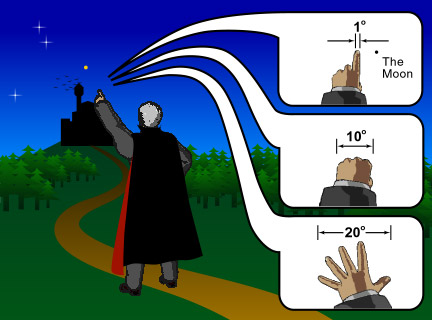

| Length (m) | Object |
|---|---|
| > 1026 | Size of the universe |
| 1026 | Distance to quasars ( Here is one of the most famous quasars, 3C273. Courtesy NOAO/NSF.) |
| 1024 | Size of a typical cluster of galaxies ( One example of galaxy cluster, near 3C324. Courtesy STScI.) |
| 1021 | Galaxies ( A typical galaxy, M31. Courtesy NASA.) |
| 1018 | Globular clusters ( A typical globular cluster, M80. Courtesy STScI.), nebulae (clumps of gas and dust) ( The Horsehead Nebula, (C) Anglo-Australian Observatory and Photograph by David Malin.) |
| 1016 | Light year |
| 1013 | The solar system |
| 109 | The Sun |
| 107 | The Earth |
| 106 | Great Wall |
| 102 | Buildings |
| 100 | Basic unit of distance, humans |
| 10-2 | Coins, bees, bugs |
| 10-4 | Diameters of hairs |
| 10-5 | Red blood cells |
| 10-6 | Bacteria |
| 10-7 | Viruses |
| 10-8 | Macromolecules |
| 10-9 | Micromolecules |
| 10-10 | Atoms |
| 10-14 | Nuclei, protons, neutrons |
| Long time ago | There was |
|---|---|
| 1.4x1010 yrs | Creation of the universe |
| 1010 yrs | Formation of galaxies |
| 4.6x109 yrs | Formation of the solar system |
| 3x109 yrs | Appearance of unicellar life |
| 6x108 yrs | Cambrian era (fossils of complex, hard-bodied animals) |
| 0.65-2.5x108 yrs | Dinosaurs |
| 3x106 yrs | Early hominids (mammals fossils) |
| 3x105 yrs | Appearance of homosapiens (the first real "human") |
| 5x103 yrs | Beginning of written human history |
| 102 yrs | Life span of a typical human |
| 1 yr | Earth orbiting once around the Sun |
| 1 day | Life span of adult stage of some insects |
| 1 hour | Time span of this lecture |
| 10 seconds | Time to read this sentence |
| 10-17 seconds | Time for light to travel across an atom |
A full circle has 360 degrees (°). One degree equals 60 arc minutes (') and one arc minute equals 60 arc seconds (''). The angular size of the Moon viewed from the Earth is about 0.5°.
Usually, if an adult has longer arms, he or she will have bigger hands. Thus, the angle sustained by, for example, the fists when we stretch out our arms is about the same for every person. Thus, we can use our hands to measure roughly the angular sizes of various objects.

At arm's length, the angular size of our fists is about 10°, fingers is about 1° and the tip of the thumb to the tip of the little finger of an extended hand is about 20°. Note that the Moon is "smaller" than the finger.
{kind=link}
{kind=link}
{kind=link}
{kind=link}
{kind=link}
{kind=link}